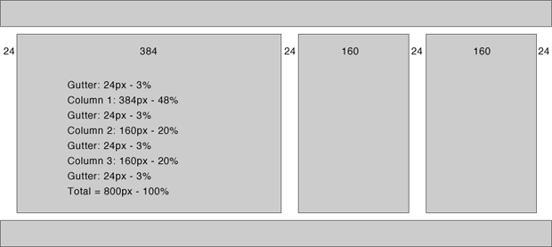

This article explains one method of achieving a successful liquid layout as well as providing basic definitions of liquid, fixed-width and em-driven layouts.
Some definitions
Liquid layout
All containers on the page have their widths defined in percents – meaning that they are completely based on the width of the viewport rather than any containing block. A liquid layout will reflow as you resize your browser window.
Combination liquid and fixed layouts
Similar to liquid layouts, except one or more of the containers on the page have fixed widths.
Fixed-width layouts
All containers on the page have their widths defined in pixels or other fixed units. They are completely independent of the viewport. A fixed layout will not move in and out when you resize your browser window.
Em-driven layouts
All containers on the page have their widths defined in ems. They will be scaled according to the users default browser font size. They are completely independent of the viewport.
You can also use combinations of the above.
The secret of liquid layouts
Liquid layouts are easy to achieve if you follow some basic rules.
- Work out a basic layout grid before you begin coding.
- include gutters so that your columns will not spread too wide.
- use percentage units for widths of all containers and gutters.
- Do not define containers that use the full width of a page – allow for browser rendering issues (such as percentage rounding).
Step 1 – Start with a layout grid
It is a good idea to start by sketching (on paper or using some imaging software) a rough layout grid.
You can start by doing a grid at 800 pixels wide. Columns and gutters can be adjusted until you are happy with the layout. When happy, these pixel-based measurements are then converted to percentage units.
If you want to achieve a basic three-column layout, your sketch could look like this:

The basic column grid for this mockup is:
| column | pixel width | percentage width |
|---|---|---|
| gutter 1 | 24px | 3% |
| column 1 | 384px | 48% |
| gutter 2 | 24px | 3% |
| column 2 | 160px | 20% |
| gutter 3 | 24px | 3% |
| column 3 | 160px | 20% |
| gutter 4 | 24px | 3% |
| total | 800px | 100% |
As you can see, there has been an allowance made for gutters between each column. This will add some space to the page and stop the columns from becoming too wide in very wide browser windows. This is important, as line length affects readability.
Step 2 – Leaving space
One problem with percentage widths is that they have to be calculated by the browser so there will be some degree of rounding up or down of the percentage measurements. For this reason, it is always good to leave some free space on the page so there is room for error. In this case, you will simply leave "gutter 4" undefined, so there is 3% of free space at the right of the layout.
| column | percentage width |
|---|---|
| gutter 1 | 3% |
| column 1 | 48% |
| gutter 2 | 3% |
| column 2 | 20% |
| gutter 3 | 3% |
| column 3 | 20% |
| gutter 4 | undefined |
| total | 97% |
Step 3 – Making containers
You now have three gutters and three columns. The gutters can be converted to left margins for each of the columns:
| column | margin-left | column width | total width |
|---|---|---|---|
| column 1 | 3% | 48% | 51% |
| column 2 | 3% | 20% | 23% |
| column 3 | 3% | 20% | 23% |
| total | 97% |
These three columns can be converted into <div> containers. You can then apply a width, margin-left and float: left to each of them:
HTML code
<body>
<div id="col1"></div>
<div id="col2"></div>
<div id="col3"></div>
</body>
CSS code
#col1 {
float: left;
width: 48%;
margin-left: 3%;
}
#col2 {
float: left;
width: 20%;
margin-left: 3%;
}
#col3 {
float: left;
width: 20%;
margin-left: 3%;
}Step 4 – Fixing an Internet Explorer bug
You may have noticed that there is a problem with the sample above in Internet Explorer 5, 5.5 and 6 for Windows. The left margin is wider in these browsers. Internet Explorer 5, 5.5 and 6 for Windows have issues with margins applied to floated items that touch the left or right edge of the viewport. These browsers will sometimes double these margin widths – so a 3% left-margin will become a 6% left-margin.
All other standards-compliant browsers will render a 100px left margin, but Internet Explorer 5, 5.5 and 6 for Windows will render a 200px wide margin.
This rendering issue can sometimes cause the third column to drop below the other two columns. Luckily, there is a work-arounds for this problem. In this case you can add display: inline to column 1 and the double float bug will disappear in Internet Explorer 5, 5.5 and 6.
CSS code
#col1 {
float: left;
width: 48%;
margin-left: 3%;
display: inline;
}
#col2 {
float: left;
width: 20%;
margin-left: 3%;
}
#col3 {
float: left;
width: 20%;
margin-left: 3%;
}
Step 5 – Adding headers and footers
It is easy to add headers and footers to this example. The header <div> will naturally sit above these floated columns and gutters as long as it is not floated. The footer must be cleared from the floated item by applying clear: both.
HTML code
<body>
<div id="header"></div>
<div id="col1"></div>
<div id="col2"></div>
<div id="col3"></div>
<div id="footer"></div>
</body>CSS code
#header {
margin-bottom: 10px;
}
#col1 {
float: left;
width: 48%;
margin-left: 3%;
display: inline;
}
#col2 {
float: left;
width: 20%;
margin-left: 3%;
}
#col3 {
float: left;
width: 20%;
margin-left: 3%;
}
#footer {
clear: both;
}Step 6 – Working around the box model
If you want to inset text within these three columns and you want to apply padding to the containers, you need to remember that Internet Explorer 5 and 5.5 for Windows incorrectly render the box model.
One way to avoid this problem is apply padding to items within the containers rather than to the containers themselves. This can be done with a rule set such as:
h2, p {
margin-left: 7px;
margin-right: 7px;
} Or, if you want to be more specific, you can choose to target a specific column:
#col1 h2, #col1 p {
margin-left: 7px;
margin-right: 7px;
}Final result
Once you have established the basic layout, you can swap columns, or add borders as needed:
- Variation – wide middle column
- Variation – wide right column
- Variation – wide left column with borders
Liquid insanity
When you understand how to set up column widths for liquid layouts, it becomes easy to do more advanced layouts with multiple liquid options: